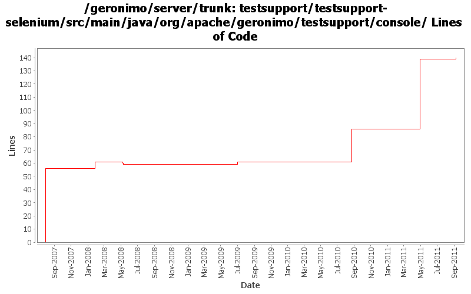

[root]/testsupport/testsupport-selenium/src/main/java/org/apache/geronimo/testsupport/console

| Author | Changes | Lines of Code | Lines per Change |
|---|---|---|---|
| Totals | 11 (100.0%) | 220 (100.0%) | 20.0 |
| xiaming | 6 (54.5%) | 143 (65.0%) | 23.8 |
| prasad | 1 (9.1%) | 56 (25.5%) | 56.0 |
| jdillon | 2 (18.2%) | 13 (5.9%) | 6.5 |
| gawor | 2 (18.2%) | 8 (3.6%) | 4.0 |
Fix console logout abnormal
1 lines of code changed in 1 file:
Console-testsuite patch provided by Liu Jun
2 lines of code changed in 1 file:
less name check
6 lines of code changed in 1 file:
Not assert page title
2 lines of code changed in 1 file:
GERONIMO-5787 fix admin console testsuite problem, patch provided by LiWenQin
105 lines of code changed in 1 file:
GERONIMO-5546 update console testsuite to support the dojo navigation tree, provided by janel Zhang
27 lines of code changed in 1 file:
might resolve some console-testsuite problems - still getting inconsistent results on jetty
3 lines of code changed in 1 file:
Fixed method rename
4 lines of code changed in 1 file:
Added waitForLoad()
9 lines of code changed in 1 file:
log html body for debugging purposes
5 lines of code changed in 1 file:
* adding advance console testsuite
* Thanks to Viet Nguyen
56 lines of code changed in 1 file: